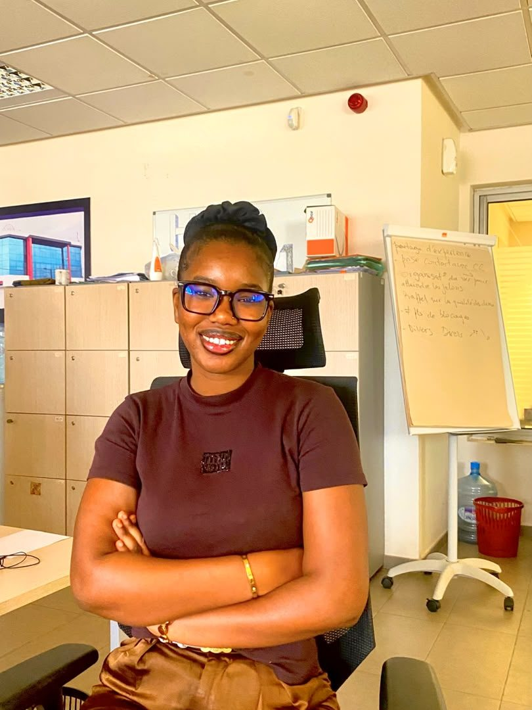
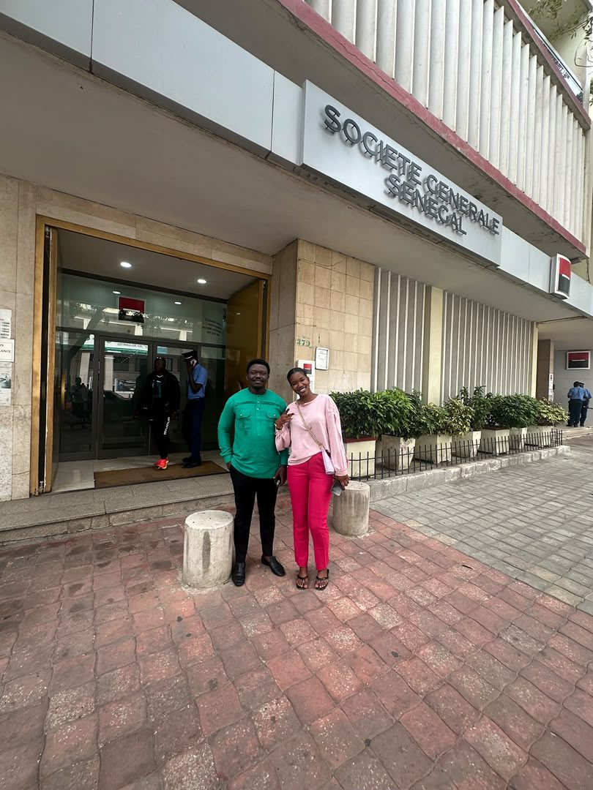
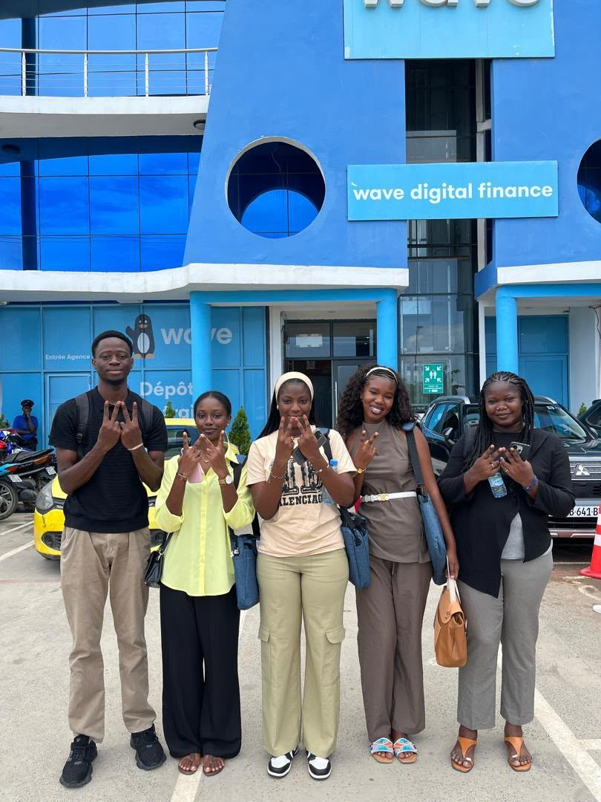
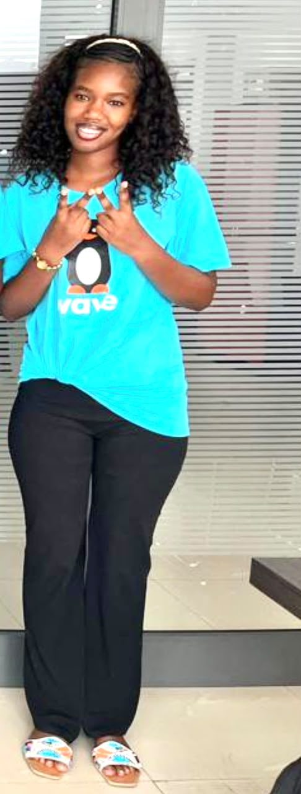
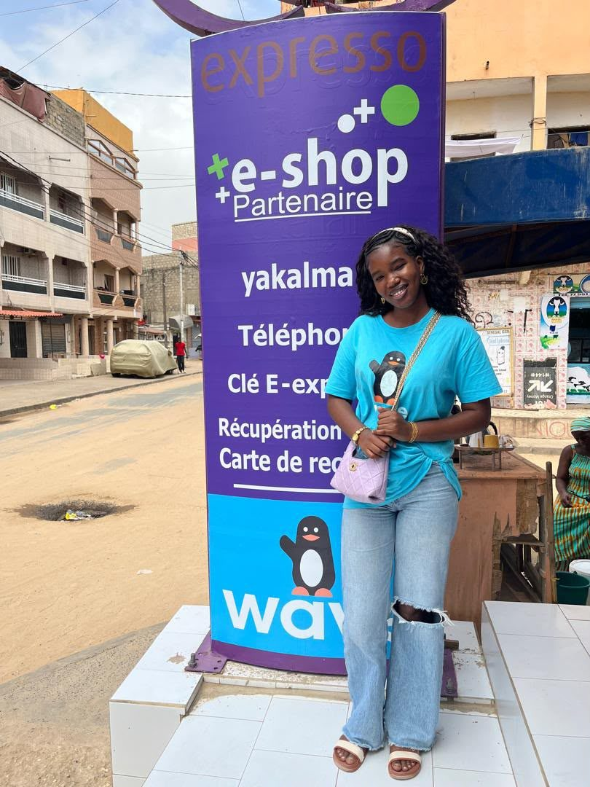

Cybersécurité & SOC
Collecte et corrélation de logs, mapping MITRE ATT&CK, sécurité applicative (OWASP), réseaux et audit ISO 27001.
1re place Lamb Tech avec un SOC complet
Bonjour, je suis
Analyste en cybersécurité, spécialisée SOC et sécurité des paiements
Je détecte les menaces, j'analyse les incidents et je sécurise les systèmes de paiement : SOC et SIEM (Wazuh, Elastic Stack), mapping MITRE ATT&CK, sécurité applicative et audit ISO 27001. Aujourd'hui chez Société Générale Sénégal, j'apporte aussi le regard fraude et conformité.

Touchez les bulles
Collecte et corrélation de logs, mapping MITRE ATT&CK, sécurité applicative (OWASP), réseaux et audit ISO 27001.
1re place Lamb Tech avec un SOC complet
Règles heuristiques, scoring ML et détection du SIM swap, pensés pour les flux Mobile Money et bank-to-wallet.
Règles de détection SIM swap conçues chez Wave
Revues KYC/KYB/KYAgent, filtrage PEP et sanctions (OFAC, UE, ONU), déclarations à la CENTIF, cadre BCEAO et GAFI.
Analyste KYC chez Société Générale
Une banque et un leader du Mobile Money : j'ai vu la fraude des deux côtés du paiement.
Société Générale Sénégal

Wave Mobile Money Sénégal



Des projets construits autour d'un même sujet : sécuriser l'argent qui circule. Le code est sur GitHub.
Projet de mémoire · 2026
En 2024, la BSIC Sénégal a perdu 21,5 millions FCFA parce que son système acceptait des webhooks sans vérifier leur authenticité. SécuriPay-AI est la réponse technique à cette faille : une plateforme qui sécurise les flux Mobile Money de bout en bout, de la notification de paiement jusqu'au rapport de conformité BCEAO.
Version simplifiée des règles de SécuriPay-AI. Choisissez un scénario ou réglez la transaction vous-même.
Machine learning · 2026
Détection de fraude à la carte bancaire sur des jeux de données Kaggle, dont le dataset de référence « Credit Card Fraud Detection » de l'ULB : 284 807 transactions, seulement 0,17 % de fraudes. Le vrai défi n'est pas d'avoir un bon taux de réussite, c'est de trouver les rares fraudes sans bloquer les clients honnêtes.
Un modèle qui répond « pas de fraude » à chaque fois obtient 99,8 % de bonnes réponses… et ne détecte rien. J'ai donc évalué les modèles sur ce qui compte pour une banque :
1re place concours Lamb Tech · Projet en binôme
« Xibaar » veut dire « information » en wolof. La plateforme centralise les journaux de sécurité des postes Windows, détecte les comportements suspects, les relie au framework MITRE ATT&CK et propose un assistant IA pour aider l'analyste à interpréter alertes et scans réseau. J'ai conçu toute la partie SOC.
Mots de passe hachés avec bcrypt, authentification JWT, entrées validées. Les limites connues du prototype sont documentées dans le dépôt, avec leurs correctifs.
Cyberdéfense
Un SOC qui simule la détection d'intrusion et la réponse aux incidents en environnement d'entreprise. VPN site-à-site IPsec (FortiGate), ACL/NAT, topologies routées et segmentées (VLAN, sous-réseaux), durcissement des équipements.
Audit IT
Audit de sécurité d'un environnement bancaire simulé : cartographie des risques, évaluation des contrôles, PRA conforme ISO 22301. Politiques de sécurité, stratégies de chiffrement et programme de sensibilisation.
Reverse engineering
Un outil de manipulation de binaires pour le fuzzing et le binary patching, documenté dans un rapport. Les mêmes compétences m'ont valu le Top 10 au CTF WICE.
DevSecOps
Une page de connexion durcie (bcrypt, échappement des entrées contre le XSS), conteneurisée avec Docker, puis attaquée dans un dossier pentest dédié pour vérifier qu'elle tient.
CI/CD
Application CRUD servie derrière Nginx, avec un pipeline GitHub Actions qui construit l'image Docker et la publie sur Docker Hub à chaque push, secrets gérés côté GitHub.
Défi hebdomadaire
Un projet de cybersécurité par semaine. Semaine 1 : un scanner de ports multithread en Python qui identifie les services exposés d'une machine (SSH, RDP, MySQL, PostgreSQL…).
| Autres dépôts | Contenu | Technos |
|---|---|---|
| Gestion d'approvisionnement | Saisie des approvisionnements par fournisseur, recherche dynamique, API JSON Server | TypeScript, Vite |
| Brazil Burger | Commande en ligne avec factures PDF | PHP, MySQL |
| DevOps — AWS | Travaux DevOps sur AWS (en cours) | AWS |
| Examen Java | Application Java orientée objet | Java |
| kallissi | Mon premier site web | HTML, CSS, JavaScript |
Travaillons ensemble
Ouverte aux opportunités en fraude, conformité, cybersécurité et support IT, à Dakar et au-delà.
English version? Download the English CV